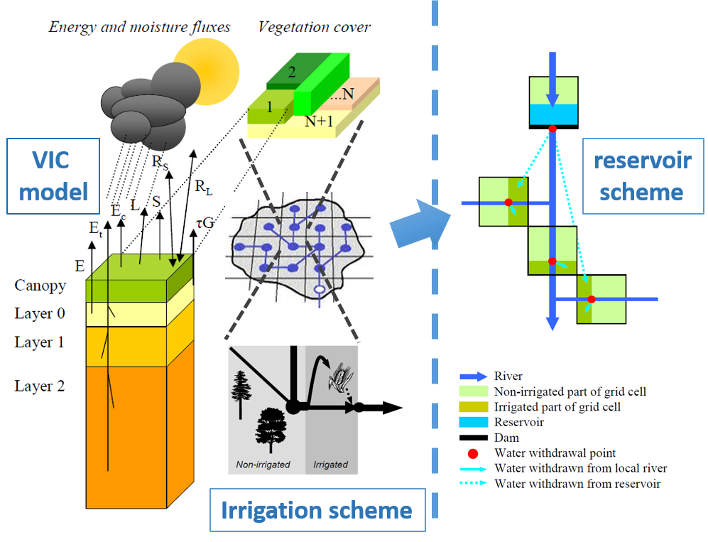
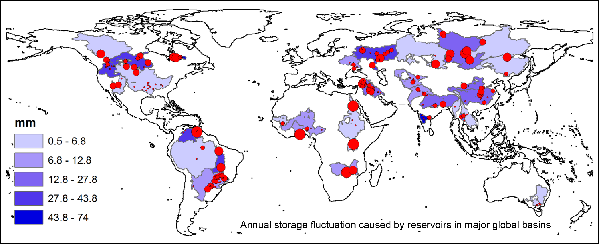
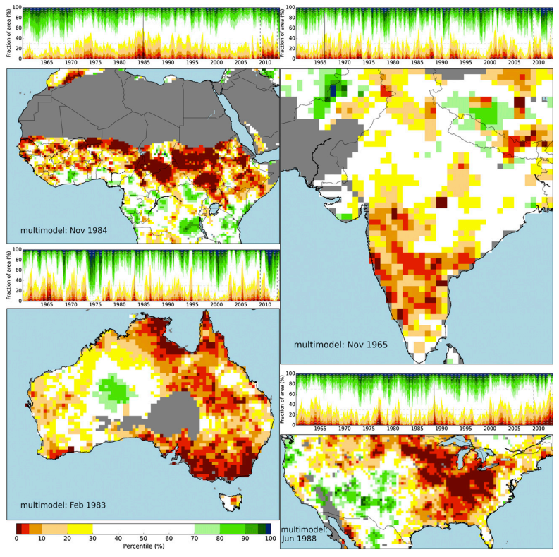
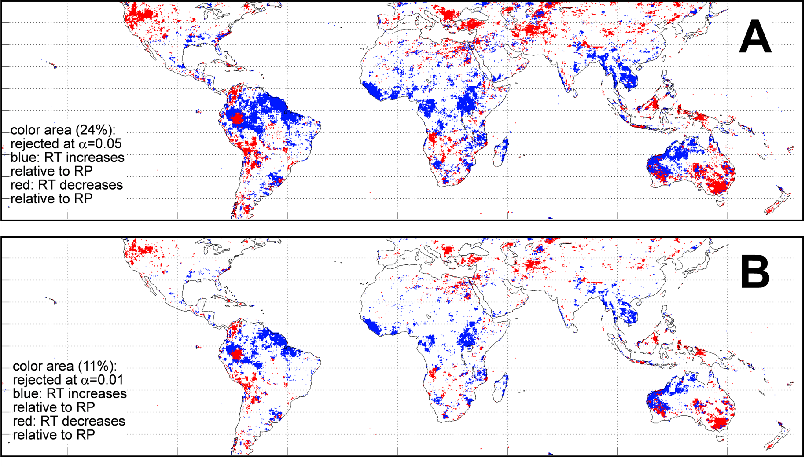

The overall goal of my basin scale research is to investigate the global water cycle and water storage change based on large scale hydrological modeling (e.g. VIC) as well as in-situ and remote sensing hydrological data analyses.
1.Zhou, T., B. Nijssen, H. Gao, and D.P. Lettenmaier 2015 The contribution of reservoirs to global land surface water storage variations. Journal of Hydrometeorology
This paper describes a global-scale water management model combining the Variable Infiltration Capacity (VIC) model with a soil moisture deficit based irrigation scheme and a reservoir optimization model. This figure shows the structure of the water management model.
We successfully simulated the historical storage time series back to 1948 for 166 large reservoirs (about 60% of global total reservoir storage) in 32 basins. This figure shows the locations of these reservoirs (red dots) and the annual storage fluctuations caused by global reservoir operations in major global basins (blue areas).
2. Nijssen, B., S. Shukla, C. Lin, H. Gao, T. Zhou, J. Sheffield, E. F. Wood, and D. P. Lettenmaier, 2014: A prototype Global Drought Information System based on multiple land surface models. Journal of Hydrometeorology
This paper described a multimodel near-real-time (time lag of ~1day) drought monitoring system, which provides estimates of surface moisture storage for the global land areas. As one of the major contributors to this paper, I prepared and processed the near-real-time satellite precipitation data by bias-correcting it to a long-term climatology. Figure shows selected regional droughts from the monitoring system.
3.
Zhou, T., B. Nijssen, G. J. Huffman, and D. P. Lettenmaier, 2014: Evaluation of real-time satellite precipitation data for global drought monitoring. Journal of Hydrometeorology
Data consistency between real-time precipitation product and long term climatology is essential in drought nowcasting. This paper employed an innovative statistic approach to test the consistency of a Real-time satellite product (TMPA-RT) with a gauge-adjusted product (TMPA-RP) over the globe. Figure shows the inconsistent areas at two significance levels.